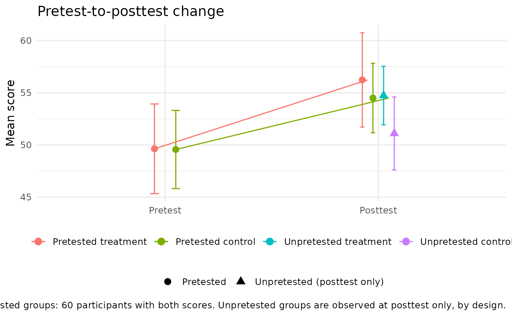

Pretest-to-posttest change in a Solomon design
Source:R/solomon_plot_change.R
plot_solomon_change.RdDraws mean pretest and posttest scores for the two pretested groups, joined to show change, alongside posttest means for the two unpretested groups. The unpretested groups appear at posttest only: their missing pretest is the experimental manipulation (Solomon, 1949), not missing data, and the figure labels it that way.
Usage
plot_solomon_change(
y_post,
treat,
pretested,
y_pre,
show_individuals = FALSE,
conf_level = 0.95
)Arguments
- y_post
Numeric posttest scores.
- treat
Treatment indicator coded 0 = control and 1 = treatment.
- pretested
Pretest indicator coded 0 = unpretested and 1 = pretested.
- y_pre
Numeric pretest scores, missing by design for unpretested participants.
- show_individuals
Logical; if
TRUE, draw each pretested participant's change as a faint line behind the means. DefaultFALSE.- conf_level
Confidence level for the intervals, which use the t distribution with n - 1 degrees of freedom. Default is 0.95.
Details
Trajectories use pretested participants with both scores observed.
Pretested participants whose pretest is incidentally missing are left out
of the trajectories and counted in the caption, and are never imputed; see
check_solomon_missing().
A change reading of this figure applies only to the pretested groups. The
Solomon contrasts the package reports compare posttests, adjusting for the
pretest where one exists; see compare_solomon_methods() for the estimand
behind each analysis.
References
Solomon, R. L. (1949). An extension of control group design. Psychological Bulletin, 46(2), 137-150.
Examples
with(solomon_example, plot_solomon_change(y_post, treat, pretested, y_pre))
